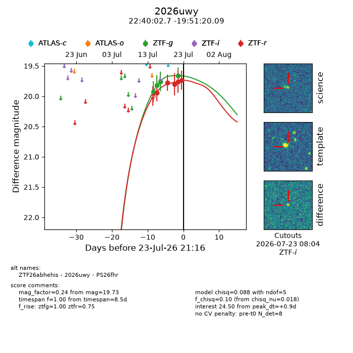
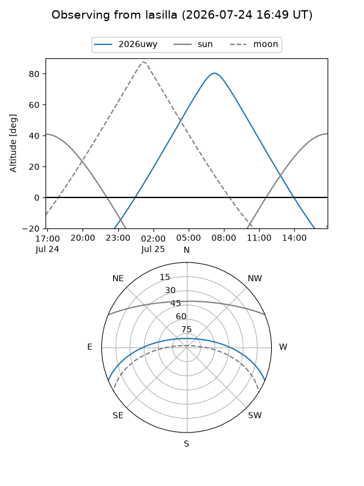
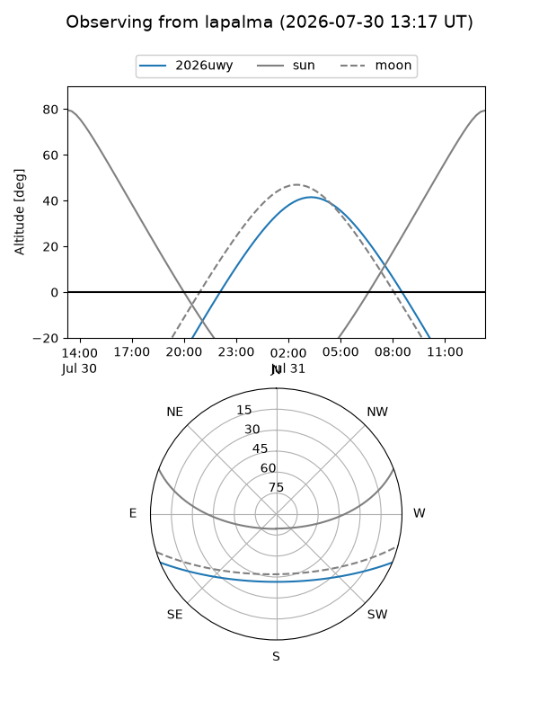
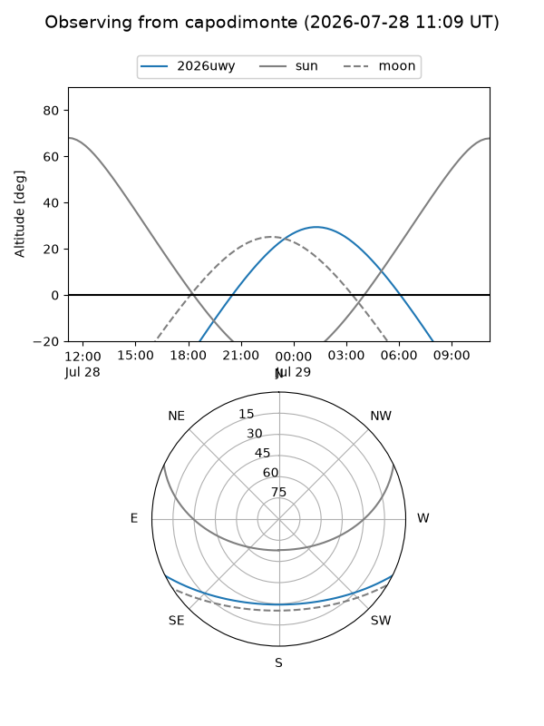
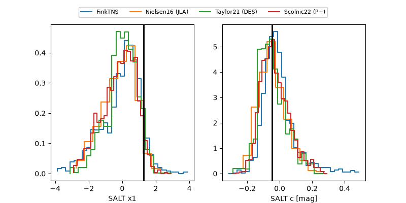

2026uwy
Target 2026uwy at 2026-07-23 21:19
Aliases and brokers:
FINK-ZTF: ztf.fink-portal.org/ZTF26abhehis
Lasair-ZTF: lasair-ztf.lsst.ac.uk/objects/ZTF26abhehis
ALeRCE-ZTF: alerce.online/object/ZTF26abhehis
YSE-PZ: ziggy.ucolick.org/yse/transient_detail/2026uwy
TNS name: wis-tns.org/object/2026uwy
Direct TNS query: direct search
alt names
ZTF26abhehis (ztf,fink_ztf)
2026uwy (tns,yse)
PS26fhr (panstarrs)
Coordinates:
equatorial (ra, dec) = 340.0113,-19.85558
equatorial (HMS+DMS) = 22:40:02.72,-19:51:20.09
galactic (l, b) = (39.4200,-59.10559)
Flags:
TNS type: nan
peak dt: +0.9
Photometry:
last ztfg=19.66, ztfr=19.73
4 ztfg, 5 ztfr detections
Lightcurve

Visibility



Additional plots
